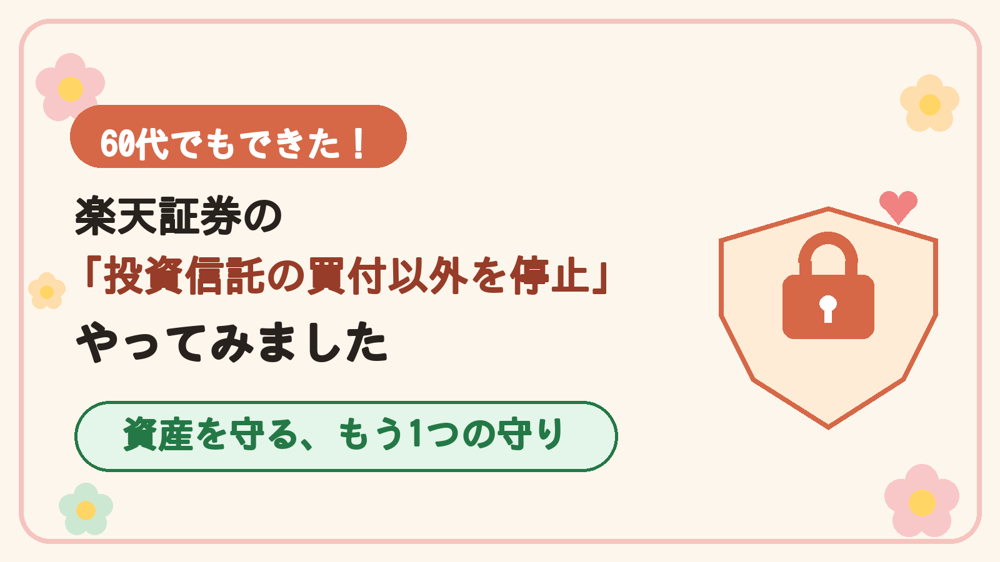
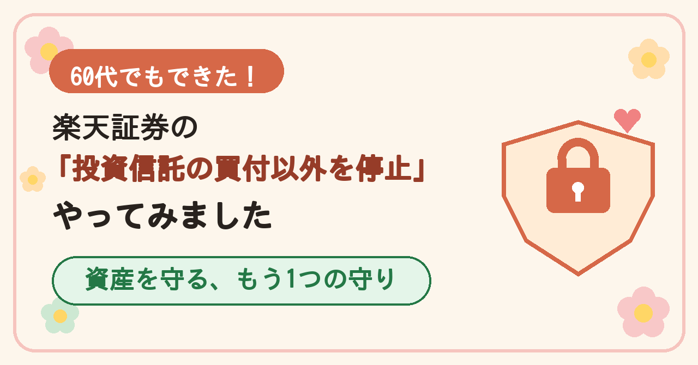
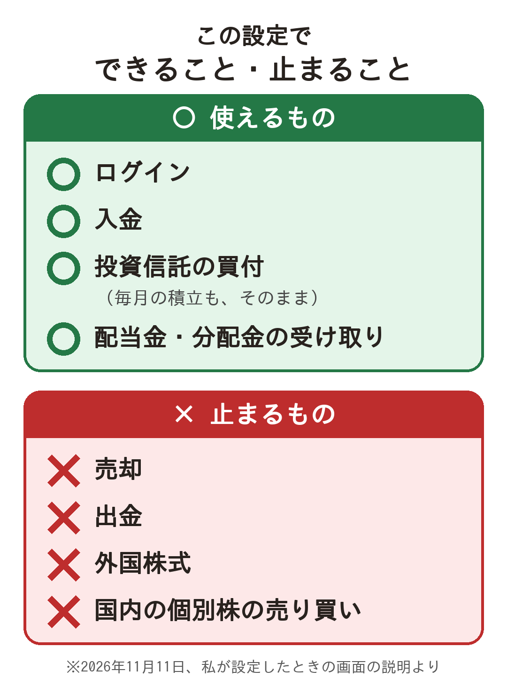
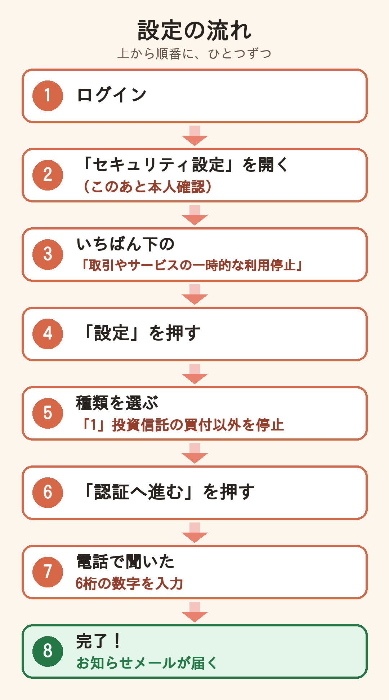
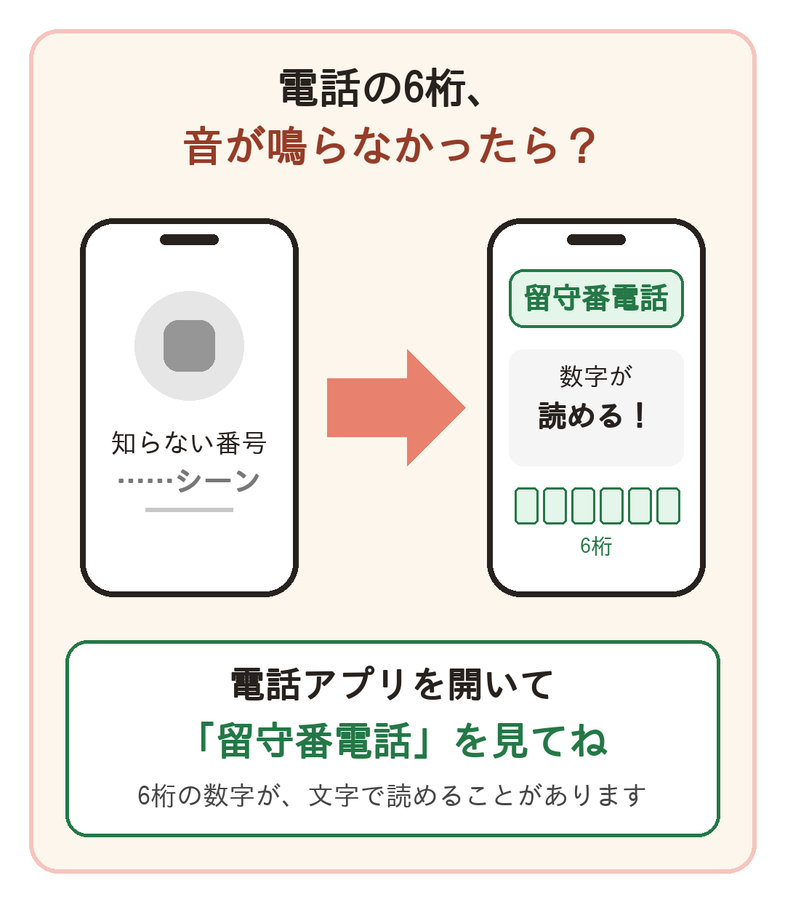
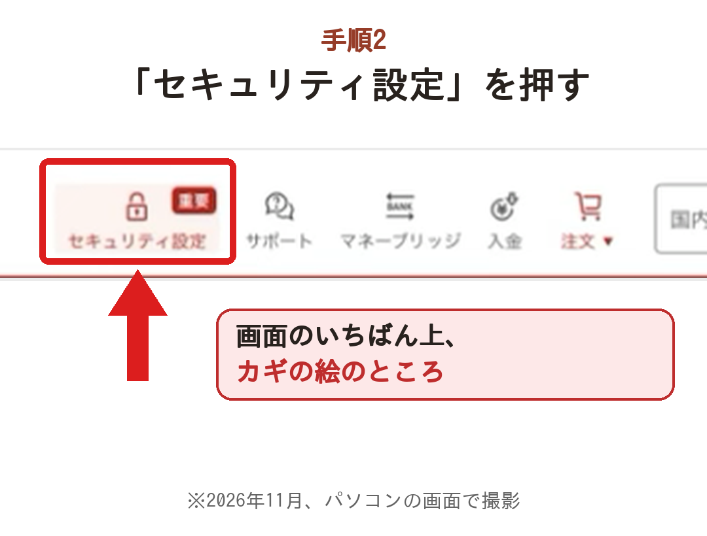

楽天証券ロックの記事
下書きと画像（リベシティ用）
📷 画像は、長押し →「"写真"に保存」で、iPhoneに入ります。
📝 本文は、下の「本文だけをコピー」を押して、エディタに貼りつけてね。
① 画像
サムネイル用（1600×900・リベシティのおすすめサイズ）
画像1：表紙（記事のいちばん上）
画像2：できること・止まること
画像3：設定の流れ
画像5：つまずき（電話の6桁）
画像4-1：「セキュリティ設定」を押すところ
画像と文章をまとめてダウンロード（MacBook用）
② 本文だけ（リベシティの「記事本文」に貼る用）
タイトル・要約・メモを抜いて、お名前も消してあります。「【画像○】」「【ぼかす】」の行は、画像を入れたら消してね。
③ 記事の下書き（ぜんぶ）